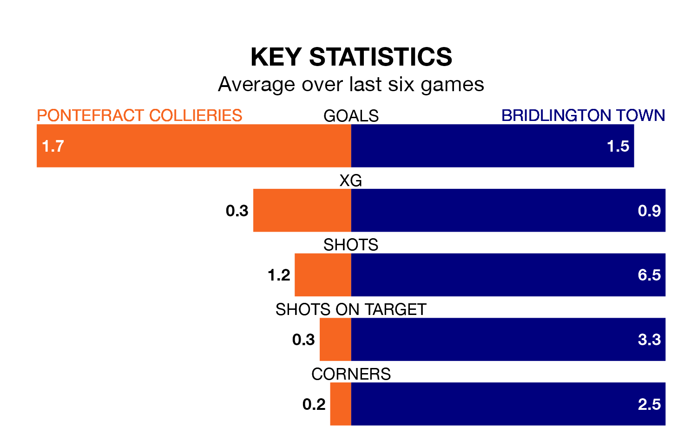

Pontefract Collieries host Bridlington Town on Saturday in the Northern Premier League Division One East.
In their last league match, on February 3, Pontefract Collieries drew with Stockton Town 0-0 away.
Bridlington lost, 3-0 away at Cleethorpes Town.
With 41 goals in 22 games so far this season, Pontefract Collieries are scoring more than average in the league with 1.9 goals per game. And they are conceding fewer than average, letting in 27 goals at a rate of 1.2 per game.
Bridlington, meanwhile, are below average scorers, with 1.3 goals per game, compared to a league average of 1.6. They have conceded 1.7 goals per game.
The hosts are in mixed form in the Northern Premier League Division One East, with two wins and three draws from their last six games.
With a win and two draws over that period, Town's form is worse – they have taken five points from 18, compared to Pontefract Collieries's nine.
In the last five years, Pontefract Collieries and Bridlington have played each other on four occasions. Pontefract Collieries won two of them, Bridlington one, and they drew once.
On average, Pontefract Collieries scored 2.0 goals and Bridlington 0.8 in those matches.
Their last meeting was on March 18, when they played out a 1-1 draw.
Pontefract Collieries are seventh in the table after 22 games, of which they have won 11 and drawn six, earning 39 points.
The away side are seven places behind the home team in 14th, with eight wins and five draws putting them on 29 points.
Updated: 11:43 (UTC), 08/02/24